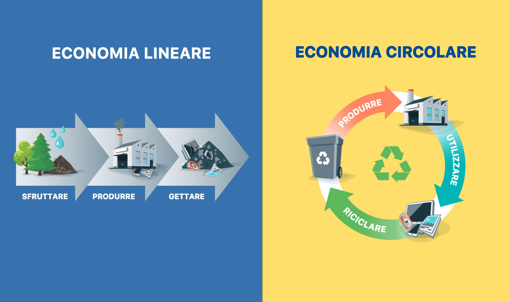

L'Economia Lineare
Produzione di prodotti di un certo valore direttamente da materie prime favorendo un processo produttivo continuo. I prodotti dell'economia lineare diventano presto obsoleti (consumismo) affinché ne sia incentivato l'acquisto di nuovi prodotti da parte dei consumatori.
Esempio: acquistiamo un nuovo telefono, dopo un breve periodo di tempo, uscirà un modello nuovo, faremo di tutto per cambiarlo nonostante il telefono sia in buone condizioni. Rendendolo così uno scarto.

L'Economia Circolare
L'economia circolare è un modello di produzione e consumo che implica condivisione, prestito, riutilizzo, riparazione, ricondizionamento e riciclo dei materiali. In questo modo si estende il ciclo di vita dei prodotti, contribuendo a ridurre i rifiuti al minimo